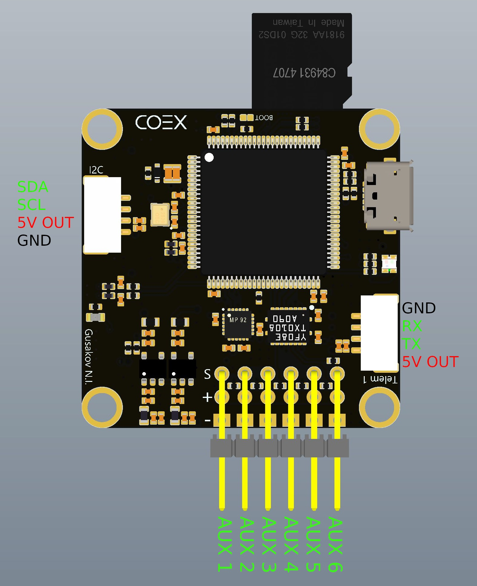

COEX Pix
Полетный контроллер COEX Pix является модифицированным аналогом полетного контроллера Pixracer. Этот полетный контроллер поставляется с наборами Клевер 4 и далее.
Ревизия 1.1
Характеристики
- Размеры платы – 35x35 мм.
- Диаметр монтажных отверстий – 3.2 мм.
- Расстояние между центрами монтажных отверстий – 30.5 мм.
- Масса платы (без проводов) – 9 г.
- Диапазон рабочих температур – -5...+65 ºC.
- Диапазон входного напряжения – 4.8...5.5 В.
Основные элементы
- Основной SOC – STM32F427VIT6.
- Память FRAM – FM25V02A.
- Датчики:
- MPU9250 (9 DOF) – 3-х осевой магнитометр, 3-х осевой гироскоп, 3-х осевой акселерометр.
- MS5607 – датчик атмосферного давления.
Разъемы
- TELEM 1 (JST-GH 4 pin) – разъем для подключения телеметрии, порт 1, протокол UART.
- TELEM 2 (JST-GH 4 pin) – разъем для подключения телеметрии, порт 2, протокол UART.
- GPS (JST-GH 6 pin) – разъем для подключения ГПС модуля (UART) с компасом (I2C).
- I2C (JST-GH 4 pin) – разъем для подключения поддерживаемых I2C устройств.
- PWR (JST-GH 6 pin) – разъем для подключения питания с платы COEX PDB или аналогичной, датчиков напряжения и тока.
- RC IN (JST-GH 4 pin) – разъем для подключения радиоприемника аппаратуры радиоуправления, канала для * снятия показаний RSSI. Поддерживаемые RC протоколы – PPM и SBUS.
- Разьем Micro USB – для подключения к ПК для настройки и коммуникации по протоколу USB 2.0/1.1
- Слот для карты памяти MicroSD, до 32 ГБ.
- Серворазъемы – для подключения контроллеров моторов и других устройств.
Схемы расположения контактов


На плате ревизии 1.0 RC IN разъем располагался на месте разъема Micro SD. Распиновка самого разъема осталась такой же.
Установка на Клевере
Важно: плата спроектирована для удобной установки на Клевере с поворотом на 180º по крену и 90º по рысканью (стрелка на плате находится снизу и указывает направо). Таким образом, параметр ориентации автопилота PX4 устанавливается в значение SENS_BOARD_ROT = ROLL 180, YAW 90.
Рекомендации
Во время установки полетного контроллера, учитывайте возможные влияния магнитных полей от силовых проводов и платы распределения питания на магнитометр. В случае установки данной платы над платой распределения питания, рекомендуется (в случае использования внутреннего магнитометра) поднять плату на высоту не менее 15 мм от платы распределения питания и силовых проводов. Силовой провод от аккумуляторной батареи старайтесь зафиксировать соответственно.
В случае использования внешнего GPS модуля со встроенным магнитометром, внутренний магнитометр рекомендуется отключать.
В случае, если на дроне не предусмотрен защитный кожух, рекомендуется изолировать барометр поролоновой губкой (достаточно подложить губку между полетным контроллером и нижней частью корпуса (платой распределения питания), либо зафиксировать иным способом.
При подключении питания в разъем PWR, на разъеме + будет напряжение 5 вольт, его можно использовать для питания сервомашинок. Не рекомендуется подключать дополнительные источники питания в разъем +, если питание подается в разъем PWR. Питать полетный контроллер одновременно от USB и PWR\AUX разъемов допускается.
Особенности платы
Для повышения надежности и стабильности, плата оснащена низкошумящими понижающими преобразователями. Установлен входной LC фильтр, а также ферритовые фильтры в цепях питания.